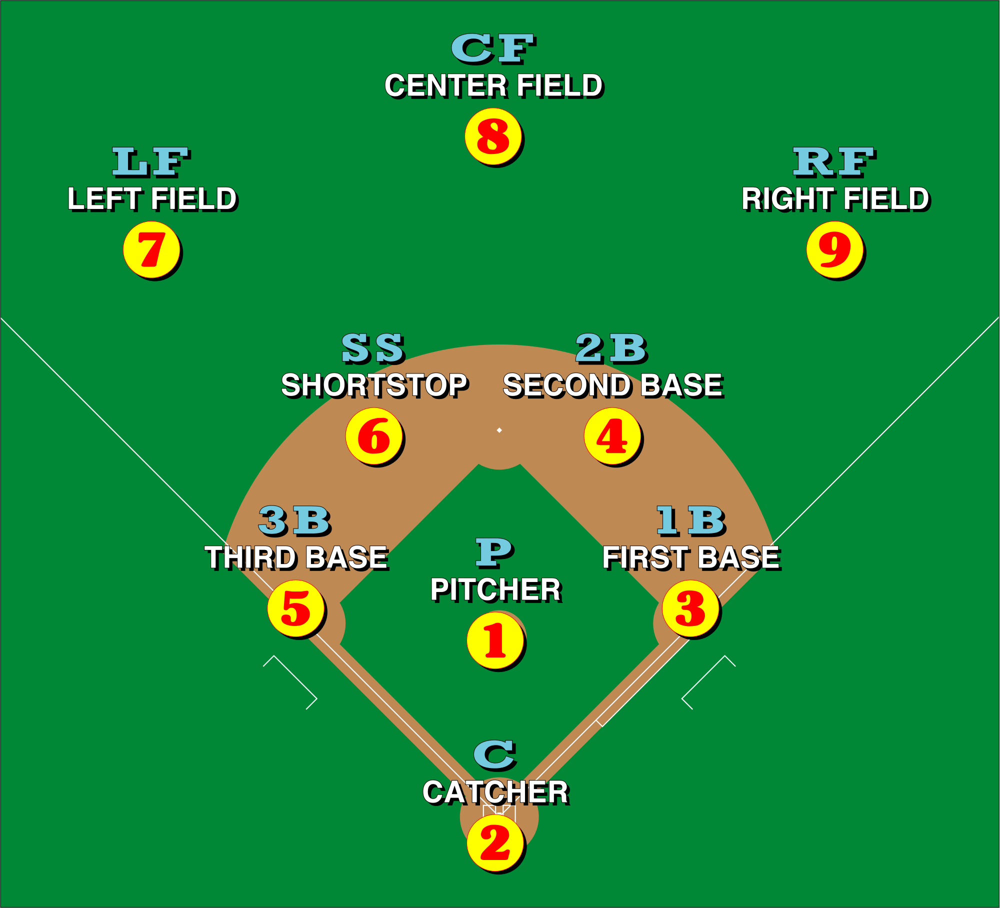

There will be a 2-hour time limit, to all regular season games. The two hour time limit starts at the scheduled game time, unless otherwise noted in the ground rules.
The top of an inning shall not start after the 2-hour time limit.
A game is considered an official game after 3 innings (weather related), the full game consists of 6 innings (Middle School).
A game is considered an official game after 4 innings (weather related), the full game consists of 7 innings (High School).
If a game is postponed due toinclement weather, it will continue exactly where it was left off, only if it is not considered an "official game".
Once the game has started, only the umpire and/or league administration can delay or postpone a game due to weather or field conditions.
8 Players can start an official game; however, the 9th spot is an automatic out in the lineup.
The re entry substitution rule is allowed (Players must re enter for the same player).
Extra hitter is allowed.
Designated hitter is allowed
The mound will be 54 feet from home plate, and 75 feet from each base (Middle School).
The mound will be 60 feet, 6 inches from home plate, and 90 feet from each base (High School).
Balks will be enforced for all games.
Umpires will go over the ground rules with both coaches at he beginning of the game.
Clarification of ALL RULES must be done BEFORE the game.
Coaches must relay all rules to their players.
All lineups must be submitted via lineup card to the umpire and the opposing team before the start of the game.
All information on the lineup cards must be accurate.
Both teams are required to keep a scorebook, the HOME TEAMS
scorebook will be the official book.
In the situation of a protest, if the HOME TEAM does not have the scorebook
correctly filled out, the HOME TEAM will automatically lose the protest.
Coaches are allowed 1 mound trip per inning, on the second mound trip, the pitcher must come out.
Coaches are allowed a total of 3 mound trips per pitcher, on the 4th trip, the pitcher must come out.
Teams are not allowed to bat around in a specific inning (regular season). Teams are allowed to bat around in the playoffs and championship.
A designated hitter is allowed to bat for any player on the field.
An extra hitter may be used in the lineup, but is not necessary.
The EH can hit anywhere in the lineup but cannot play the field.
Allows for a starter to re-enter the game one time. That is, when a sub replaces a starter, the starter then can sub back in the place of his replacement once. However, the starter can only return to the same spot in the lineup he occupied before being subbed out of the game.
A substitute, on the other hand, after entering the game and then being replaced, cannot come back into the game.
Base Runners may not run over fielders, they must slide or avoid.
Courtesy runners may be used in 2 out situations for the catcher to speed up the game, the courtesy runner must be the last batted out in that inning. If there is no outs in that inning, the courtesy runner is the player who made the last out of the previous inning. If there are no outs in the first inning, the courtesy runner is the last batter in the lineup.
First and third base coaches MUST wear helmets in the coaches box (NO EXCEPTIONS).
Students are not allowed to coach in the coach's box.
There are no headfirst sliding, except on pick off plays (Middle School).
There will be no running over the catcher.
All appeal plays must start from the pitching mound.
Base runners can advance on a dropped third strike.
Base runners can lead and steal willingly.
Only team coaches area allowed to coach first and third base and be in the dugout.
All coaches must be wearing school apparel to represent their team and school.
Umpires will only speak to a head coach during disputes.
Umpire must be notified of an intentional walk.
Pitches do not have to be thrown.
The batter will proceed directly to their base.
The 10 run mercy rule will be in effect after 3 innings (Middle School).
The 10 run mercy rule will be in effect after 4 innings (High School).
The home team always gets a final at bat in order to decrease the deficit to less than 10 runs. If done so, the game will continue. If the lead is 10 runs or greater after the home teams at bat, the game will end.
If a game ends in a tie, extra innings will take place (only if within the allotted time limit).
If the allotted time has expired, but the field is still available, teams can continue play.
If extra innings starts and a full inning can not be completed, the game will end in a tie.
If extra innings cannot start due to time constraints, the game will end in a tie.
Teams are not allowed to take infield/outfield before the game.
Teams can stretch and throw in the outfield.
Teams can not bat around in a specific inning (regular season only).
There will be 60 seconds in between innings.
Pitchers get no more than 7 warm up pitches in between innings.